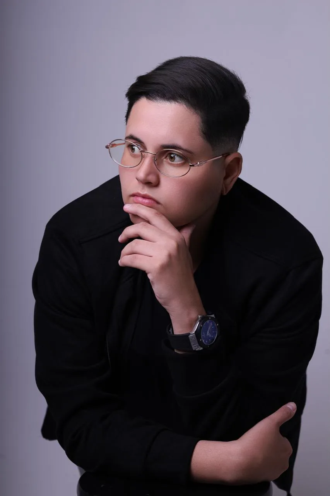
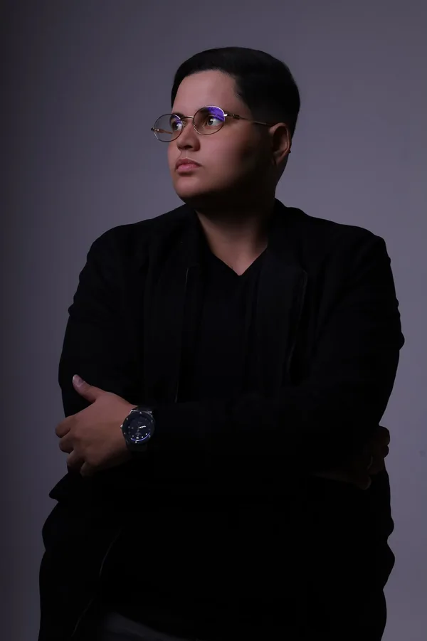

HISTÓRIAS QUE MERECEM SER CONTADAS.
UM OLHAR. INFINITAS HISTÓRIAS.
O MOMENTO PASSA. A HISTÓRIA FICA.
NICOLAS
GUILHERME.
STORY MAKER
Histórias acontecem.
Eu faço elas serem lembradas.
EM DESTAQUE / SHOWS E EVENTOSSINTA A ENERGIA.
CADA SHOW TEM UMA HISTÓRIA.
DO PALCO
À TELA.
A energia
continua.
O som, os bastidores, a reação do público. Uma edição que transforma a intensidade do momento em conteúdo que dá vontade de assistir de novo.
Cobertura de shows em Jataúba e região.
Pernambuco e Paraíba, sob consulta.
Não foi possível carregar o vídeo. Abrir vídeo de destaque
01 / POR TRÁS DO OLHARCRIATIVIDADE COM INTENÇÃO

NICOLAS GUILHERME — STORY MAKERMAIS QUE
CONTEÚDO.
HISTÓRIAS
REAIS.
Sou Nicolas Guilherme, Story Maker em Jataúba, Pernambuco.
Crio Stories, Reels e conteúdo para redes sociais, transformando eventos e bastidores em histórias feitas para serem vistas, sentidas e lembradas.
Entre bastidores, detalhes, pessoas e acontecimentos, busco aquilo que muitas vezes acontece por poucos segundos, mas merece continuar existindo depois deles.
Produzo conteúdo pensando não apenas no que está acontecendo, mas em como aquela história pode ser contada.
Conheça o que eu faço02 / O QUE EU FAÇODO INSTANTE À NARRATIVA
Story Maker, cobertura de shows e eventos e conteúdo para redes sociais
MEU OLHAR REC
O story dura 24 horas.
A história pode durar
muito mais.
ENXERGAR ALÉM DO ÓBVIO. CONTAR ALÉM DO INSTANTE.03 / TRABALHOSSELEÇÃO / @JATAUBABASTIDORES
HISTÓRIAS QUE JÁ
PASSEI POR TRÁS
DA CÂMERA.
Histórias que saíram do instante.
Uma seleção de Reels do @jataubabastidores.
UM NOVO OLHAR.
UMA NOVA HISTÓRIA.
UMA NOVA HISTÓRIA.
Novo case em breve.
EM BREVE04 / PROCESSO CRIATIVOPRESENÇA EM CADA ETAPA
ANTES DO REC,
EXISTE UM
OLHAR.

- 01
ENTENDER
Antes de gravar, entender o momento, o ambiente e aquilo que precisa ser contado.
- 02
OBSERVAR
Encontrar detalhes, pessoas e acontecimentos que fazem parte da história.
- 03
CRIAR
Transformar o que está acontecendo em conteúdo pensado para redes sociais.
- 04
PUBLICAR
Construir uma narrativa capaz de acompanhar o momento enquanto ele acontece.
O QUE ME MOVE
NÃO É SÓ GRAVAR.
É ESTAR NO LUGAR CERTO,
NO MOMENTO CERTO,
E SABER QUAL HISTÓRIA
ESTÁ ACONTECENDO.
É SOBRE ESTAR PRESENTE.
05 / FORA DO PORTFÓLIOMAIS PERTO, MAIS REAL
ACOMPANHE
OS BASTIDORES.
Nem tudo
cabe aqui.
O resto acontece
por lá.
06 / VAMOS CRIAR JUNTOS
TEM UMA HISTÓRIA ACONTECENDO?
VAMOS
CONTAR.
De Jataúba para a sua história.
Com base em Jataúba–PE, realizo cobertura de shows e eventos em tempo real, registro de bastidores e produção de Stories e Reels. Do palco à energia do público, conto a história do seu show com conteúdo para redes sociais.
Atendo Jataúba, Santa Cruz do Capibaribe e cidades próximas, com deslocamentos para Pernambuco e Paraíba. Envie a cidade e a data do seu evento para consultar disponibilidade e orçamento.
Shows, eventos, projetos e momentos especiais.
Vamos conversar sobre o que você quer registrar.